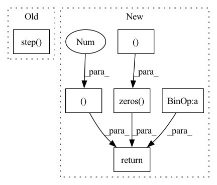

Pattern ID :14813

Before Change
def forward(self, g_s, f_s, g_t, f_t):
trans_loss_s, domain_acc_s = self._single_domain_forward(g_s, f_s, domain=1)
trans_loss_t, domain_acc_t = self._single_domain_forward(g_t, f_t, domain=0)
self.grl.step()
self.domain_discriminator_accuracy = 0.5 * (domain_acc_s + domain_acc_t)
return 0.5 * (trans_loss_s + trans_loss_t)
def _single_domain_forward(self, logits, features, domain=1):
After Change
h = self.grl(self.map(f, g))
d = self.domain_discriminator(h)
d_label = torch.cat((
torch.ones((g_s.size(0), 1)).to(g_s.device),
torch.zeros((g_t.size(0), 1)).to(g_t.device),
))
weight = 1.0 + torch.exp(-entropy(g))
batch_size = f.size(0)
weight = weight / torch.sum(weight) * batch_size
self.domain_discriminator_accuracy = binary_accuracy(d, d_label)
return self.bce(d, d_label, weight.view_as(d))
class RandomizedMultiLinearMap(nn.Module):
In pattern: SUPERPATTERN
Frequency: 4
Non-data size: 6
Instances
Fragment ID: 49251407
Project Name: thuml/transfer-learning-library
Commit Name: 6dfc8e293ca2cbc4d116dc8ed0a6ef176dff0d06
Time: 2020-04-12
Author: 13126830206@163.com
File Name: dalib/adaptation/cdan.py
M Class Name: ConditionalDomainAdversarialLoss
N Class Name: ConditionalDomainAdversarialLoss
M Method Name: forward(5)
N Method Name: forward(5)
M Parent Class: nn.Module
N Parent Class: nn.Module
M File Name: dalib/adaptation/cdan.py
N File Name: dalib/adaptation/cdan.py
M Start Line: 86
M End Line: 90
N Start Line: 87
N End Line: 100
'>
Before Change
def complete_tokens(self, prompt: np.array, temperature: np.array, top_k: np.array, top_p: np.array,
start_pos: np.array, stop_pos: np.array) -> np.array:
return self.step(self.parameters, prompt, temperature, top_k, top_p, start_pos, stop_pos)
def complete(self, text: str, temperature: float = 0.5, top_k: int = 32, top_p: float = 0.9, length: int = 128):
tokens = jnp.asarray(np.frombuffer(text.encode(), np.uint8)).astype(jnp.int32).reshape(1, -1)
tokens = jnp.pad(tokens, ((0, 0), (0, self.ctx.dims.sizes.sequence - len(text))))
After Change
def complete_tokens(self, prompt: jnp.ndarray, temperature: float, top_k: int, top_p: float, length: int
) -> jnp.ndarray:
tokens = jnp.pad(prompt, ((0, 0), (0, self.ctx.dims.sizes.sequence - prompt.shape[-1])))
base = jnp.zeros(())
start = base + prompt.shape[1]
return self.complete_jax(tokens, temperature, base + top_k, base + top_p, start, start + length)
def complete(self, text: str, temperature: float = 0.5, top_k: int = 32, top_p: float = 0.9, length: int = 128):
tokens = jnp.asarray(np.frombuffer(text.encode(), np.uint8)).astype(jnp.int32).reshape(1, -1)
'>
Fragment ID: 49251420
Project Name: homebrewnlp/homebrewnlp-jax
Commit Name: b7ced2e7e2781c199b37aeb1b3e92e3b15f1772e
Time: 2022-05-08
Author: 39779310+ClashLuke@users.noreply.github.com
File Name: inference.py
M Class Name: Inference
N Class Name: Inference
M Method Name: complete_tokens(6)
N Method Name: complete_tokens(7)
M Parent Class:
N Parent Class:
M File Name: inference.py
N File Name: inference.py
M Start Line: 86
M End Line: 87
N Start Line: 95
N End Line: 98
'>
Before Change
def forward(self, g_s, f_s, g_t, f_t):
trans_loss_s, domain_acc_s = self._single_domain_forward(g_s, f_s, domain=1)
trans_loss_t, domain_acc_t = self._single_domain_forward(g_t, f_t, domain=0)
self.grl.step()
self.domain_discriminator_accuracy = 0.5 * (domain_acc_s + domain_acc_t)
return 0.5 * (trans_loss_s + trans_loss_t)
def _single_domain_forward(self, logits, features, domain=1):
After Change
h = self.grl(self.map(f, g))
d = self.domain_discriminator(h)
d_label = torch.cat((
torch.ones((g_s.size(0), 1)).to(g_s.device),
torch.zeros((g_t.size(0), 1)).to(g_t.device),
))
weight = 1.0 + torch.exp(-entropy(g))
batch_size = f.size(0)
weight = weight / torch.sum(weight) * batch_size
self.domain_discriminator_accuracy = binary_accuracy(d, d_label)
return self.bce(d, d_label, weight.view_as(d))
class RandomizedMultiLinearMap(nn.Module):
'>
Fragment ID: 49251396
Project Name: thuml/transfer-learning-library
Commit Name: 8477111b23336e7dd2d349a4b35b969240ff5871
Time: 2020-04-12
Author: 13126830206@163.com
File Name: dalib/adaptation/cdan.py
M Class Name: ConditionalDomainAdversarialLoss
N Class Name: ConditionalDomainAdversarialLoss
M Method Name: forward(5)
N Method Name: forward(5)
M Parent Class: nn.Module
N Parent Class: nn.Module
M File Name: dalib/adaptation/cdan.py
N File Name: dalib/adaptation/cdan.py
M Start Line: 86
M End Line: 90
N Start Line: 87
N End Line: 100